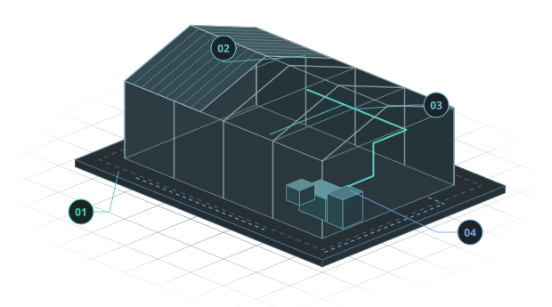

Управление строительными проектами
Подключаемся на этапе оценки участка или берём на себя отдельную задачу. Объединяем функции технического заказчика, генерального проектировщика и генерального подрядчика.

Условная схема промышленного объекта
Управление проектом на всех этапах
Связываем проектирование, закупки и строительство единым графиком по принципу EPC. Координируем участников, следим за сроками и бюджетом. Перед согласованием изменений оцениваем их влияние на поставки, контракты и ход работ.
Что делаем на каждом этапе
-
Оценка участка и подготовка
- Оцениваем реализуемость замысла и ограничения участка, готовим технико-экономическое обоснование.
- Организуем инженерные изыскания, сбор исходных документов, включая ГПЗУ, и получение технических условий подключения к сетям.
- Готовим исходные данные и задание для проектирования.
Результат для заказчика
Понимание, что можно построить на участке, и исходные данные для проектирования.
-
Проектирование
- Разрабатываем проектную и рабочую документацию, сопровождаем экспертизу.
- Планируем сроки и бюджет проектирования, увязываем выпуск документации с графиком стройки.
Результат для заказчика
Комплект документации для экспертизы и выполнения строительных работ.
-
Закупки и строительство
- Организуем выбор поставщиков и подрядчиков, координируем договоры и поставки.
- Согласуем работы подрядчиков и контролируем объёмы, качество и сроки строительства.
Результат для заказчика
Поставки увязаны с графиком монтажа, а ход работ и отклонения видны по мере строительства.
-
Пусконаладка и ввод
- Организуем пусконаладку и участвуем в испытаниях оборудования.
- Координируем приёмку, сопровождаем получение разрешения на ввод и передачу объекта заказчику.
Результат для заказчика
Проверенное оборудование и комплект документов для ввода и передачи объекта.
Обсудим ваш проект
Расскажите, какой объект планируете и на каком этапе нужна помощь.